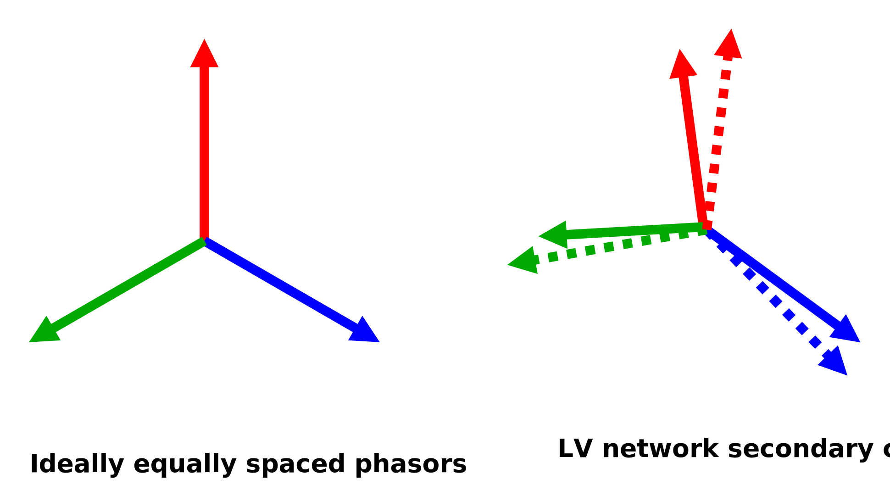
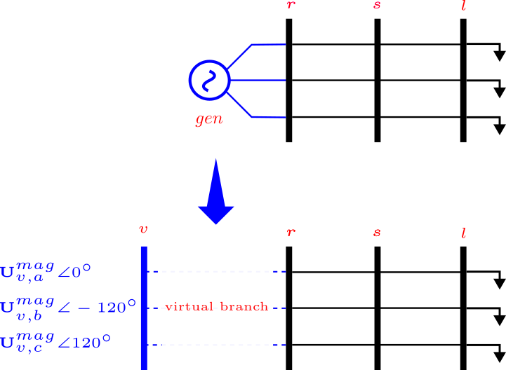
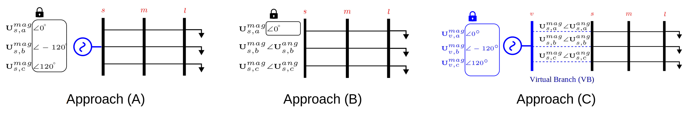

Angular Reference Models
As of version 0.8.0, PMDSE provides the ability to customize bounds of voltage angles variables, mostly used to define angular reference models for the reference bus of the network.
Background
Conventionally, the slack bus voltage phasor is used as reference for the rest of the network. In single-phase calculations, the reference phasor is set to 1 pu (magnitude) and 0 degrees (angle). The three-phase system extension of these assumptions would be to set the slack bus voltage magnitude to [1., 1., 1.] pu and the angles are equally spaced, e.g., [0, -120, 120] degrees. While this is common practice for three-phase network power flows and similar calculations, the assumption of equally spaced phasor angles is only valid for stiff and balanced networks, and do not hold for generic multi-conductor networks, low voltage ones in particular.
In the case phasor measurements are available at the slackbus, these can integrated in the DSSE by either "fixing" the slackbus variables to the measured values (not recommended), or by treating the phasor measurement as any other measurement. However, phasor measurements are practically absent in present distribution networks, so these solutions are in general not possible, and the standard practice is to rely on the balanced reference slackbus assumptions described above. PMDSE > v0.8.0 features two alternatives to the balanced slackbus model, described below.

The first alternative consists of setting a balanced reference bus to be the primary side of the slack bus (instead of the secondary), such that the voltage phasor on the secondary side is, more realistically, unbalanced. The unbalance introduced between the primary and the secondary is dependent on the network's stiffness. The stiffness can be analytically determined by modeling an equivalent generator, where the generator's short circuit capability represents the upstream network impedance (Thevenin equivalent). This approach is relatively standard in distribution network analysis, and is featured "out-of-the-box", e.g., in OpenDSS and PowerModelsDistribution.jl. In PowerModelsDistribution.jl, the slack bus can be identified by looking up the bus with bus_type = 3 property in the network's mathematical model. PowerModelsDistribution.jl represents that slack bus with a virtual generator connected to a virtual bus via a virtual branch, with branch parameters based on the generator's short circuit capability, as shown in the figure below. Note that PMD can automatically add these virtual elements when parsing network data in OpenDSS format through PMD's built-in parser.

Note that measurements at the ``virtual branch" (slack bus of PowerModelsDistribution.jl) do not exist in practice. Moreover, short circuit capabilities and virtual branch parameters are often calculated through assumptions on the substation transformer and upstream network which are often inaccurate and may compromise the trustworthiness of state estimation results.
Therefore, there is high value in being able to develop alternative models for voltage angle references in unbalanced networks without phasor measurements. This is usually not possible with conventional (e.g., Gauss-Newton) state estimation algorithms, whereas PMDSE enables such capabilities through its compatibility with more generic solvers, e.g., Ipopt.
A discussion of one such generic model, as well as its comparison with the two more conventional approaches described above, is presented in our publication[1]. Hereafter, we provide a succint summary of these three approaches to reference voltage phasor modelling.
[1] : M. Numair, M. Vanin, and D. Van Hertem, "Angular Reference Models for Optimization-based Unbalanced Distribution System State Estimation," in Proc. IEEE PES Innovative Smart Grid Technologies Europe (ISGT Europe), Dubrovnik, Croatia, 2024
Angular Reference Modeling Approaches for Distribution System State Estimation (DSSE)
Based on the above discussion and related literature on the topic, three approaches for modeling the reference voltage angles are made available in DSSE:

Approach A: Conventional Symmetrical Reference Angle
- This approach designates the substation head bus as a stiff slack bus and fixes its voltage phasor angles to [0, -120, 120] degrees, assuming balanced voltage angles.
- This assumption may lead to inaccuracies in DSSE, especially in LV networks with significant unbalance. The errors propagate to other estimated states, such as voltage magnitudes.
Approach B: Single Angular Reference
- This approach fixes only the phase "a" voltage angle to 0 degrees (or another arbitrary value), while the angles for phases "b" and "c" are treated as state variables instead of being assigned determined values, e.g., -120 and 120 degrees.
- This method captures the unbalance at the reference bus without relying on knowledge of upstream network parameters, which can lead to more accurate state estimates in generic distribution networks.
- The voltage angles at the reference bus are thus relaxed, although they can be bound, e.g., between -100 and -140 for phase b and 100 and 140 for phase c, to facilitate the solving process. Bounds should be loose enough as to not remove improved solutions from the search space.
Approach C: Virtual Bus Approach
- This approach introduces a virtual primary bus, allowing for the complete relaxation of voltage phasor angles at the secondary side.
- The symmetrical angle assumption is then applied to the virtual bus, and a virtual branch is added between primary and secondary bus, whose impedance is determined through a Thevenin equivalent model of the upstream network or the short circuit capabilities of the equivalent synchronous generator.
- While potentially more accurate in scenarios with perfect knowledge of upstream network parameters, this approach suffers from inaccuracies when these parameters are unknown or inaccurately modeled. This is a significant drawback in real-world LV networks where this information is often unavailable.
Usage of these Models in PMDSE
Approach C: Virtual Bus Approach
When importing OpenDSS data, the default behaviour of PowerModelsDistribution.jl is to use the virtual bus to represent the slack bus (Approach C) and to define the angular reference for the network. Hence, performing state estimation with the default MATHEMATICAL model from PowerModelsDistribution.jl will result in assuming measurements at the virtual branch (slack bus) and the results with then be reliant on the assumptions made about the upstream network (virtual branch parameters).
# load packages
import Ipopt
import PowerModelsDistribution as _PMD
import PowerModelsDistributionStateEstimation as _PMDSE
# parse example network data (.dss format), featured in the PMDSE package
ntw_path = joinpath(_PMDSE.BASE_DIR, "test/data/extra/networks/case3_unbalanced.dss")
data = _PMD.parse_file(ntw_path; data_model=_PMD.MATHEMATICAL)
# solve a power flow to generate synthetic measurements
pf_result = _PMD.solve_mc_pf(data, model, ipopt_solver)
# write the measurements in a temporary file/folder
msr_path = joinpath(mktempdir(),"temp.csv")
_PMDSE.write_measurements!(_PMDSE.IVRUPowerModel, data, pf_result, msr_path)
# add measurements to the data dictionary, as well as state estimation settings
_PMDSE.add_measurements!(data, msr_path, actual_meas = true)
data["se_settings"] = Dict{String,Any}("criterion" => "rwlav", "rescaler" => 1)
# set solver and attributes, and run state estimation
slv = PMDSE.optimizer_with_attributes(Ipopt.Optimizer, "tol"=>1e-8, "print_level"=>0)
SE_c = _PMDSE.solve_mc_se(math_c, model, slv)However in a realistic case measurement are not available at the virtual branch, but at the substation bus. Hence, the virtual bus is removed from the MATHEMATICAL data model. And the substation bus is defined as the slack bus. Additionally the measurement file at msr_path is updated to contain the measurements at the substation bus instead of the virtual bus.
(virtual_bus, r_new) = _PMDSE.remove_virtual_bus!(data) Approach A: Conventional Symmetrical Reference Angle
After removing the virtual bus and defining the substation bus as the slack bus, the conventional approach assumes symmetrical reference angle, by fixing the voltage angles at the substation bus to [0, -120, 120] degrees, and the voltage magnitudes to 1.0 p.u. (reference voltage magnitudes can be easily set to any other value if wished, and do not present modelling hurdles like reference angles). To fix the angle values, it is sufficient to add ``va" values to the data dictionary:
math_a = deepcopy(data)
math_a["bus"]["$(r_new)"]["va"] = deg2rad.([0, -120, 120])
math_a["bus"]["$(r_new)"]["bus_type"] = 3
SE_a = _PMDSE.solve_mc_se(math_a, model, slv)Approach B: Single Angular Reference
For approach B, we bound the voltage angles at the buses between maximum and minimum values instead of fixing them at an exact value, through the "vamin" and "vamax" dictionary entries:
math_b = deepcopy(data)
(virtual_bus, r_new) = _PMDSE.remove_virtual_bus!(math_b)
Angles_bound = Inf
math_b["bus"]["$(r_new)"]["bus_type"] = 3
math_b["bus"]["$(r_new)"]["vamax"] = deg2rad.([0.0, -120+Angles_bound, 120+Angles_bound])
math_b["bus"]["$(r_new)"]["vamin"] = deg2rad.([0.0, -120-Angles_bound, 120-Angles_bound])
SE_b = _PMDSE.solve_mc_se(math_b, model, slv)Note how the angles at the substation bus are relaxed except for the phase "a" angle which is fixed to 0 degrees. The angles for phases "b" and "c" are treated as state variables and are estimated by PMDSE(+Ipopt). The exact values of these two variables are in practice impossible to retrieve with a standard DSSE set-up (i.e., with limited measurements), and the system is in general unobservable. However, as power flows depend on the difference between voltage angles at adjacent buses, rather than on their absolute value, multiple (infinite) angle values result in the same DSSE objective, voltage magnitude and power flow values. As this approach does no rely on upstream network parameters nor balanced angle assumptions, observability of voltage angle values is "sacrificed" in favor of accurate estimation of the other states (notably voltage magnitudes) and their dependent variables (power flows and injections).
Summary
In summary, PMDSE now offers the ability to constrain, relax or bound the voltage angles at the slack bus (or any arbitrary bus) using the va, vamin and vamax dictionary entries in the MATHEMATICAL model dictionary, to obtain any of the three approaches above.